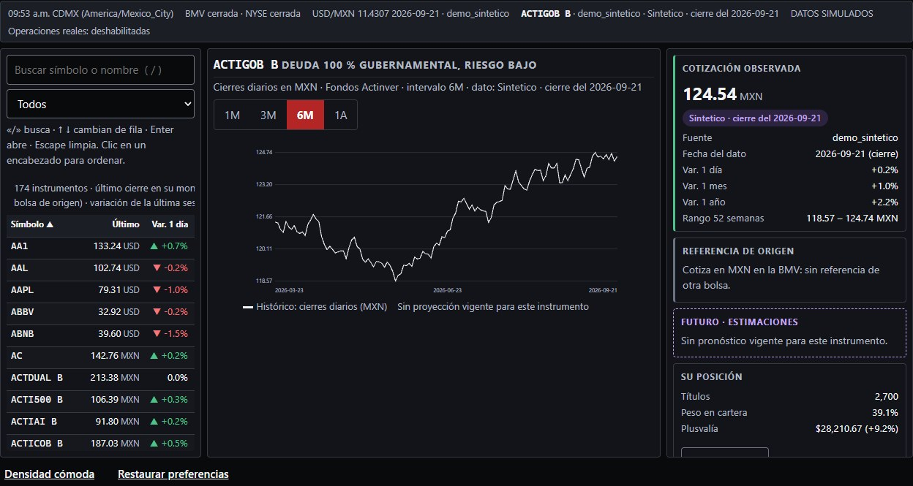

Reporte ejecutivo · Terminal local de análisis de portafolios · 23 de noviembre de 2026 · versión 102 (17-nov-2026)
El inversionista individual decide con información dispersa (portal de su casa de bolsa, noticias, hojas de cálculo) y sin forma de saber si una idea es mejor que mantener lo que ya tiene. Las plataformas profesionales (Bloomberg, Refinitiv) cuestan miles de dólares al mes.
Actinver Terminal reúne en una sola estación, con fuentes gratuitas y legales: datos de mercado con su procedencia, optimización de portafolios, gestión de riesgo, un plan de acción diario y un asistente de IA. Nació para el Reto Actinver 2026 y hoy funciona para un escenario real de largo plazo e intradía.
| Paso | Qué hace la terminal |
|---|---|
| 1. Datos | Descarga cierres y cotizaciones de FRED, Banxico, Tiingo, EODHD, Alpaca y la SEC, respetando los límites gratuitos. Cada dato guarda fuente, fecha, retraso y vigencia. |
| 2. Cartera | Usted registra su cartera (operaciones, importación o captura). La terminal la valúa en MXN con el tipo de cambio de Banxico. |
| 3. Portafolios | El motor calcula propuestas automáticas y usted crea los suyos en «Mis portafolios» (Markowitz, máximo Sharpe, Black-Litterman). Elige uno como portafolio principal. |
| 4. Riesgo | VaR/CVaR, contribución al riesgo, stops y tendencia. Las ventas por riesgo mandan sobre el objetivo. |
| 5. Plan de acción | Compara la cartera con el portafolio principal y produce, por instrumento: vender, comprar, mantener o pendiente, con cantidad, precio límite, motivo y qué lo invalidaría. Llega también por Telegram. |
| 6. Seguimiento | Alertas de pérdida, cambios de cartera, avisos por emisora y un monitor en la nube. |

| Módulo | Para qué sirve |
|---|---|
| Plan de acción | Qué hacer hoy, en orden de prioridad. |
| Mis portafolios | Construir, comparar y guardar portafolios; exportar a Excel con Solver. |
| Propuestas y Ranking | Propuestas automáticas con puntuación explicada; ranking por capitalización. |
| Estación de Mercado | Monitor, gráfico, inspector, teclado y vista de celular. |
| Flujo | Velas, Order Flow (footprint, TPO) y Option Flow (Heston, GEX). |
| Laboratorio y Backtesting | Probar ideas con el pasado sin engañarse: permutación, Holm, preregistro y holdout. |
| Asistente | Preguntas en lenguaje natural sobre su cartera y la documentación (Claude, Gemini, Ollama o sin IA). |
| Apariencia y Aviso legal | Tema, letra y densidad con un asistente de estética; términos de uso y deslinde de responsabilidad. |
Se busca la combinación de pesos w que maximiza el índice de Sharpe: (E[rp] − rf) / σp, con E[rp] = wᵀμ y σp = √(wᵀΣw). La tasa libre de riesgo rf es CETES 28 días (Banxico). La covarianza Σ se estima con Ledoit-Wolf, que reduce el error de estimación con historia corta. Hay topes por instrumento, moneda y sector.
Combina el equilibrio del mercado con las opiniones del usuario («espero que X suba 10 % al año», con su confianza). El resultado es un portafolio que se mueve hacia esas vistas solo en proporción a la confianza declarada.
Toda propuesta se compara contra la referencia más simple: 1/N (mismo peso en todo). Se usa walk-forward: se calcula con datos hasta una fecha y se evalúa con los posteriores, sin ver el futuro, e incluyendo comisiones. Si no supera a 1/N, la terminal lo dice. A la fecha, ningún modelo tiene ventaja demostrada.
VaR 95 %: pérdida que no se supera en 95 de cada 100 días. CVaR: pérdida promedio en el 5 % de los peores días. Contribución al riesgo: cuánto del riesgo total aporta cada posición. Las reglas de venta (stop y tendencia) se validaron en 1,600 carteras de 2022 a 2026: reducen caídas pero rinden ≈ 1 punto menos que mantener; la terminal lo informa con cifras y deja elegir modo estricto o suave.
Los pronósticos se muestran como rango 10–90 % (8 de cada 10 resultados caen dentro), nunca como un número único. Se etiquetan como estimación experimental.
Cada dato lleva su estado: vigente, retrasado, vencido, sin datos o simulado. Un precio vencido nunca se presenta como actual; si falta un dato, la decisión queda «pendiente» y se dice qué falta.
Cartera demo con rendimientos sintéticos fijos, calculada con el mismo motor de la terminal. Una prueba automática vigila estas cifras: si el modelo cambia, la prueba falla hasta que se documente el porqué.
| Métrica (cartera demo) | Valor |
|---|---|
| Rendimiento esperado anual | 17.31 % |
| Volatilidad anual (Ledoit-Wolf) | 10.26 % |
| VaR 95 % a 1 día (histórico) | 1.02 % |
| CVaR 95 % a 1 día | 1.26 % |
| Tasa libre de riesgo usada | 10.0 % |
| Instrumento | Peso demo | Máximo Sharpe |
|---|---|---|
| SIC:IVV | 40.0 % | 60.0 % |
| FONDO:ACTIGOB | 35.0 % | 26.6 % |
| BMV:WALMEX | 10.0 % | 0.0 % |
| SIC:MSFT | 15.0 % | 13.4 % |
| Concepto | Significado |
|---|---|
| Rendimiento esperado E(r) | Promedio anual estimado con la historia; no es una promesa. |
| Riesgo σ (volatilidad) | Cuánto varía el rendimiento; más alto, más incierto. |
| Sharpe | Rendimiento extra por unidad de riesgo; más alto es mejor. |
| Banda de no-rebalanceo | Si una posición está a menos de ±2 puntos de su objetivo, no se opera: evita pagar comisiones de más. |
| Portafolio principal | El portafolio que usted elige como objetivo de su cartera real. |
| Fuera de muestra | Probado con datos que el modelo no vio al calcularse. |
| Precio límite | El precio máximo (compra) o mínimo (venta) que usted captura en su casa de bolsa. |
start.bat) o reciba el plan por Telegram.Python (FastAPI, SQLite, pandas, scikit-learn, skfolio) e interfaz HTML/CSS/JS sin compilación. Corre en 127.0.0.1; claves solo en .env; política de seguridad de contenido estricta y protección CSRF. Pruebas automáticas en la última versión: Python —, interfaz 55; integración continua en GitHub. Se puede probar en el navegador (demo con datos simulados) o en GitHub Codespaces.